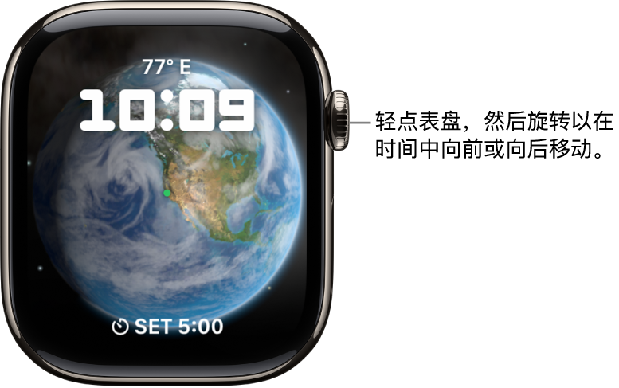

此表盘显示不断更新的地球、月球或太阳系 3D 模型。
下方的文件数包括本地化资源。固件名称键能确认包的归属；组件的圆屏点击边界、亮屏过渡与 AOD 对照均待设备验证。
原始包 已解析属性表 Mach-O 方法与成员 ARM64 汇编 解出的图集
.strings × 40 .car × 1 .plist × 1 无扩展名 × 1
NTKAegirFaceBundle.bundleFACE_STYLE_AEGIR_FACE_DESCRIPTIONEDIT_OPTION_LABEL_CONTENT_MARSEDIT_OPTION_LABEL_STYLE_CROP01EDIT_OPTION_LABEL_CONTENT_URANUSEDIT_OPTION_LABEL_STYLE_CROP05EDIT_OPTION_LABEL_TYPEFACE_NEW_YORKEDIT_MODE_LABEL_STYLEEDIT_OPTION_LABEL_TYPEFACE_TOKYOEDIT_OPTION_LABEL_CONTENT_SATURNEDIT_OPTION_LABEL_STYLE_CROP02EDIT_OPTION_LABEL_STYLE_FULLEDIT_OPTION_LABEL_CONTENT_EARTHEDIT_OPTION_LABEL_CONTENT_ORRERYEDIT_MODE_LABEL_TYPEFACEEDIT_OPTION_LABEL_CONTENT_MERCURYEDIT_OPTION_LABEL_STYLE_CROP06EDIT_OPTION_LABEL_TYPEFACE_SAN_FRANCISCOEDIT_OPTION_LABEL_STYLE_CROP03EDIT_MODE_LABEL_CONTENTEDIT_OPTION_LABEL_CONTENT_JUPITEREDIT_OPTION_LABEL_CONTENT_LUNAEDIT_MODE_LABEL_NUMERALSEDIT_OPTION_LABEL_CONTENT_NEPTUNEEDIT_OPTION_LABEL_STYLE_RANDOMEDIT_OPTION_LABEL_CONTENT_RANDOMEDIT_OPTION_LABEL_STYLE_CROP04EDIT_OPTION_LABEL_CONTENT_VENUS色组与设备条件 共享色组与默认值
-[NTKAegirFaceView tritium_prepareForTransitionToTritiumOnAnimated:withCompletion:];-[NTKAegirFaceView tritium_createFaceAnimator];-[NTKAegirFaceView tritium_transitionToFrameSpecifier:];-[NTKAegirFaceView _prepareWristRaiseAnimation];-[NTKAegirFaceView tritium_prepareForActiveStateBurnInStudyWithDisplayDate:];-[NTKAegirFaceView _performWristRaiseAnimation];-[NTKAegirFaceView tritium_timeViews];-[NTKAegirFaceView tritium_prepareForInactiveStateBurnInStudy];-[NTKAegirFaceView tritium_willTransitionToTritiumOnToFrameSpecifier:];-[NTKAegirFaceView _tritium_updateDimmingValueForCurrentVistaState];-[NTKAegirTritiumFont fontForStyle:];-[NTKAegirTritiumFont initWithFont:];-[NTKAegirFaceView tritium_prepareForTransitionToTritiumOnAnimated:withCompletion:];-[NTKAegirFaceView _applyDataModeAnimated:];-[NTKAegirFaceView _updateLocaleAnimated:];-[NTKAegirFaceView _animateTransitionToViewMode:completion:];-[NTKAegirFaceView _applyTransitionFraction:fromOption:toOption:forCustomEditMode:slot:];-[NTKAegirFaceView _homeScreenAppearanceTransitionDidEndAtLocation:];-[NTKAegirFaceView _interpolateFromPose:toPose:progress:];-[NTKAegirFaceView tritium_createFaceAnimator];-[NTKAegirFaceView _cleanupAfterTransitionToOption:forCustomEditMode:slot:];-[NTKAegirFaceView astronomyVistaViewContentsAnimationFinished:];-[NTKAegirFaceView _setIsAnimatingViewMode:];-[NTKAegirFaceView tritium_transitionToFrameSpecifier:];-[NTKAegirFaceView _prepareWristRaiseAnimation];-[NTKAegirFaceView _animateTransitionToViewMode:];-[NTKAegirFaceView _homeScreenAppearanceTransitionWillStartTowardsLocation:];-[NTKAegirFaceView screenWillTurnOnAnimated:];-[NTKAegirFaceView _performWristRaiseAnimation];-[NTKAegirFaceView _configureForTransitionFraction:fromEditMode:toEditMode:];-[NTKAegirFaceView exitInteractiveModeAnimated:completion:];-[NTKAegirFaceView setOverrideDate:duration:];-[NTKAegirFaceView tritium_willTransitionToTritiumOnToFrameSpecifier:];-[NTKAegirFaceView _applyHomeScreenAppearanceTransitionProgress:];-[NTKAegirFaceView screenDidTurnOffAnimated:];+[NTKAegirFace _complicationSlotDescriptors];+[NTKAegirFace _orderedComplicationSlots];+[NTKAegirFace _defaultSelectedComplicationSlotForDevice:];-[NTKAegirFace _complicationSlotDescriptors];-[NTKAegirFace _orderedComplicationSlots];-[NTKAegirFace _localizedNameForComplicationSlot:];-[NTKAegirFace _numberOfOptionsForCustomEditMode:slot:];-[NTKAegirFace _defaultOptionForCustomEditMode:slot:];-[NTKAegirFace _indexOfOption:forCustomEditMode:slot:];-[NTKAegirFace _optionAtIndex:forCustomEditMode:slot:];-[NTKAegirFaceView _keylineCornerRadiusForComplicationSlot:];-[NTKAegirFaceView _detentTypeForCustomEditMode:slot:];-[NTKAegirFaceView _layoutPhaseLabel];-[NTKAegirFaceView _detachedComplicationDisplays];-[NTKAegirFaceView _legacyLayoutOverrideforComplicationType:slot:];-[NTKAegirFaceView _applyTransitionFraction:fromOption:toOption:forCustomEditMode:slot:];-[NTKAegirFaceView layoutSubviews];-[NTKAegirFaceView _cleanupAfterTransitionToOption:forCustomEditMode:slot:];-[NTKAegirFaceView _applyOption:forCustomEditMode:slot:];-[NTKAegirFaceView _prepareForEditing];-[NTKAegirFaceView _topComplicationFrame];-[NTKAegirFaceView _cleanupAfterEditing];-[NTKAegirFaceView topComplicationFontWeight];-[NTKAegirFaceView _fadesComplicationSlot:inEditMode:];-[NTKAegirFaceView topComplicationFont];-[NTKAegirFaceView _configureComplicationView:forSlot:];-[NTKAegirFaceView _loadLayoutRules];-[NTKAegirFaceView _minimumBreathingScaleForComplicationSlot:];-[NTKAegirFaceView _newLegacyViewForComplication:family:slot:];-[NTKAegirFaceView layoutConfigurationForSlot:];-[NTKAegirFaceView _setComplicationsInteractionEnabled:];-[NTKAegirFaceView topComplicationFontSize];-[NTKAegirFaceView _layoutSpheroidLabel:];-[NTKAegirFaceView keylineStyleForComplicationSlot:];-[NTKAegirFaceView _complicationPickerStyleForSlot:];